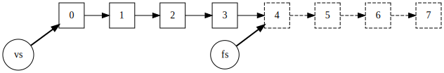
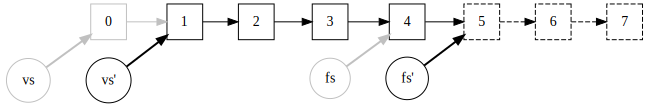

Clojure Parallelism for Side-effectful Blocking Operations
Currently we are working on a mobile app project with its backend written in Clojure. The backend service needs to perform some IO operations, e.g.,
- Upload files to cloud storage
- Call a RESTful API for bunches of arguments
Unfortunately, the SDK we use does not provide any non-blocking APIs. So, go-block is a no-go. Calling (map upload-file! files) 1 loses the opportunity to run upload-file! in parallel. But Clojure provides a convenient way to make it parallel: pmap. Just prepend map with letter p, with literally a single keystroke, you immediately solve the problem — or not?
It turns out such free lunch comes with a price. As Sean Corfield said in this post, “pmap is a very blunt instrument and, although it can be a useful quick’n’dirty solution occasionally, you generally want to avoid it.” When doing my research, I found the article Idiomatic Clojure: Mixing Parallel Side Effects and Iteration has nicely put the reasons against using pmap and discussed the alternatives. This post is basically my notes on reading it.
How pmap works
Take a look at the actual code of pmap from Clojure’s GitHub repo:
(defn pmap
[f coll]
(let [n (+ 2 (.. Runtime getRuntime availableProcessors))
rets (map #(future (f %)) coll)
step (fn step [[x & xs :as vs] fs]
(lazy-seq
(if-let [s (seq fs)]
(cons (deref x) (step xs (rest s)))
(map deref vs))))]
(step rets (drop n rets))))The implementation is concise but a bit tricky. Before delving into how it works, firstly, here is a refresher for lazy-seq, one of the fundamental building blocks for laziness in Clojure.
(lazy-seq & body) returns a clojure.lang.LazySeq which represents delayed computation. A LazySeq holds a reference to an IFn of (fn [] body) which evaluates to some ISeq, but it will only invoke the body the first time seq is called. It is often used in tandem with cons to construct a lazy sequence.
This StackOverflow answer clarifies what cons is and how does it work with lazy-seq:
consactually returns aclojure.lang.Consobject, which is what lazy sequences are made of. Note thatConsobjects in Clojure are different from “cons cells” in other Lisps. A ClojureConstakes an arbitraryObjectas head, and anISeqas tail. SinceConsitself implementsISeq, you can build sequences out ofConsobjects.clojure.lang.LazySeqalso implementsISeq, so it can be used as the tail of aCons.
To be a little more pedantic, the second argument to cons (the function) can also be nil, in order to make the end of a proper list:
static public ISeq cons(Object x, Object coll){
if(coll == null)
return new PersistentList(x);
else if(coll instanceof ISeq)
return new Cons(x, (ISeq) coll);
else
return new Cons(x, seq(coll));
}For demonstration, the following is a simplified implementation of map based on lazy-seq and cons:
(defn my-map
[f coll]
(lazy-seq
(when-some [s (seq coll)]
(cons (f (first s)) (my-map f (rest s))))))Now back to pmap after the aside. pmap tries to run functions with a degree of parallelism of #CPUs + 2, referred as n in the code, trying to achieve optimum utilization, as stated in Java Concurrency In Practice.
In the second binding of let form, it sets up return values rets by (map #(future (f %)) coll). Recalling map is lazy, here the realization of futures is postponed. Once evaluated, the future will be dispatched onto clojure.lang.Agent/soloExecutor for actual execution.
And then comes the step function. step takes two arguments: vs, the return values not yet consumed, and fs, the delayed futures not yet realized. It returns a lazy sequence by wrapping the code inside lazy-seq, so the results are computed on demand as they are accessed. However, we will see in a moment that pmap is actually semi-lazy.
In each step (hence the name), step calls (seq fs) to force the evaluation of the first element of fs should fs be non-empty, making a new computation of f take place. After that, it returns a list where the head is the head of vs derefed, and the rest is composed by recursively calling (step (rest vs) (rest fs)). Note that if the caller tries to consume the head before the actual computation is done, it will block on the deref. Furthermore, in case fs is empty, it means the computation is almost finished, so the whole vs is derefed and yielded.
Reaching the last line, the initial call to step is (step rets (drop n rets)). rets and (drop n rets) share the tail of sequence, except that (drop n rets) points to a position n elements ahead. (drop n ...) actually has the side effect of realizing the first n computations. This is the reason we call pmap “semi-lazy”, as the first n elements of coll are computed eagerly even before any consumption of results.

Supposing #CPUs = 2, coll is (range 8), and diagram above shows how data are organized at the first call to step.
The diagram below shows what it looks like after the first step.

During the execution of pmap, it keeps an invariant of (= (count vs) (+ (count fs) n)), assuming the length of coll is at least #CPUs + 2.
The problems with pmap
The docstring of pmap somewhat sums up its shortcomings (emphasis mine):
… Semi-lazy in that the parallel computation stays ahead of the consumption, but doesn’t realize the entire result unless required. Only useful for computationally intensive functions where the time of
fdominates the coordination overhead.
Semi-lazy: Not eager, not lazy, but in between. This will be a headache if your code relies on the side effects of the function calls. Parallel programming and laziness have intrinsically conflicting goals, which also places semi-laziness in some embarrassing position.
Only suitable for computationally intensive functions: Quoting Java Concurrency In Practice,
Even compute-intensive threads occasionally take a page fault or pause for some other reason, so an “extra” runnable thread prevents CPU cycles from going unused when this happens.
For tasks that also include I/O or other blocking operations, you want a larger pool, since not all of the threads will be schedulable at all times.
pmapspawns a fixed number of#CPUs + 2threads, so it’s suboptimal for IO-bound operations.If
fis a lightweight, short-lived function despite being CPU-bound, and you usepmapin a tight loop, the coordination overhead may also neutralize the benefits of extra parallelism.
Besides the above points, there are other drawbacks:
pmapusesSoloExecutorwhich is an unbounded thread pool (OpenJDK code):public static ExecutorService newCachedThreadPool() { return new ThreadPoolExecutor(0, Integer.MAX_VALUE, 60L, TimeUnit.SECONDS, new SynchronousQueue<Runnable>()); }If you call two
pmaps consecutively, the second call may cause more threads spawned than expected.No backpressure, as the thread pool can keep growing.
To make semi-laziness even more unpredictable, when chunked-seq is used the sequence is realized in chunks of 32 elements.
pmappreserves order, sometimes it is unnecessary and may hinde on-time delivery to the downstream.
A better pmap
To recap, for IO-bound operations it is fundamentally wrong to choose the number of threads based on either the count of CPU cores, because it is not CPU-bound, or the count of the collection, because that may be a very large number. Instead, we should choose the number large enough to saturate the IO bandwidth, but not larger. Usually, the number is specific to the task at hand, and should be kept globally across the instance.
In case the number of requests in flight exceeds the designed degree of parallism, we have 3 choices:
- Fail the request, e.g., returning 429 “Too Many Requests”.
- Block the request.
- Temporarily increase the thread number and handle the request in a newly-spawned thread.
Nonetheless, pmap preferably should take an “all or nothing” approach, as it’s tricky to restore the side effects when pmap has failed partially.
Java’s built-in tools for concurrent programming is too powerful to ignore. Being able to push down the problem to the host platform of Java (JavaScript) for Clojure (ClojureScript) is an advantage. In this particular case, it means you can leverage the countless hours of manpower poured into Java’s concurrency libraries.
Solving the problem with java.util.concurrent by Clojure code that looks like Java code in disguise, is not ideal from a Clojure purist’s perspective, but let’s remember that Clojure running on the JVM is not an implementation detail, as stated by the BDFL himself:
Clojure also is designed to run on the JVM. Being on the JVM is not an implementation detail. It is an objective.
— Rich Hickey, Clojure – An Introduction for Lisp Programmers
So I choose to go with the “Unbounded Queue” way as in Idiomatic Clojure: Mixing Parallel Side Effects and Iteration, only with slight modifications.
My pmap implementation firstly checks whether the number of enqueued tasks in ThreadPoolExecutor’s queue is really excessive and if so, fails the call as a whole:
(defn submit
[pool f]
(.submit ^ExecutorService pool ^Callable f))
(defn pmap*
[f xs]
(if (> (.. @default-pool getQueue size) threshold)
(throw (RejectedExecutionException. "Too many queued requests"))
(->> xs
(mapv (fn [x] (submit @default-pool #(f x))))
(mapv deref))))The default-pool made by newFixedThreadPool uses unbounded LinkedBlockingQueue, contrary to newCachedThreadPool’s SynchronousQueue which behaves like a rendezvous channel.
| Thread pool type | Queue type | Queue size | #Workers |
|---|---|---|---|
newFixedThreadPool |
LinkedBlockingQueue |
[0, +∞) | n |
newCachedThreadPool |
SynchronousQueue |
0 | [0, +∞) |
(Not really ∞ but makes little difference in practice.)
The usage:
(try
(let [results (pmap* upload-file! files)]
...)
(catch RejectedExecutionException rejected-ex
; Returns 429 "Too Many Requests"
...))Finally, beware of the gotcha of ThreadPoolExecutor with unbounded queue if you would like to configure corePoolSize smaller than maxPoolSize.
This is actually bad using
mapfor side-effect. See Idiomatic Clojure: Mixing Side Effects and Iteration.↩︎